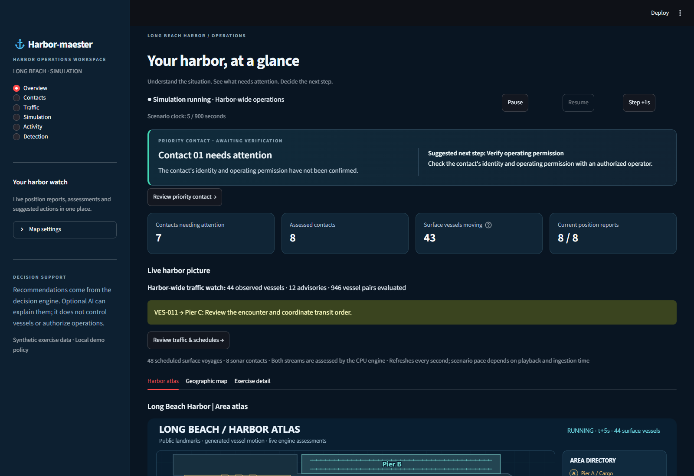
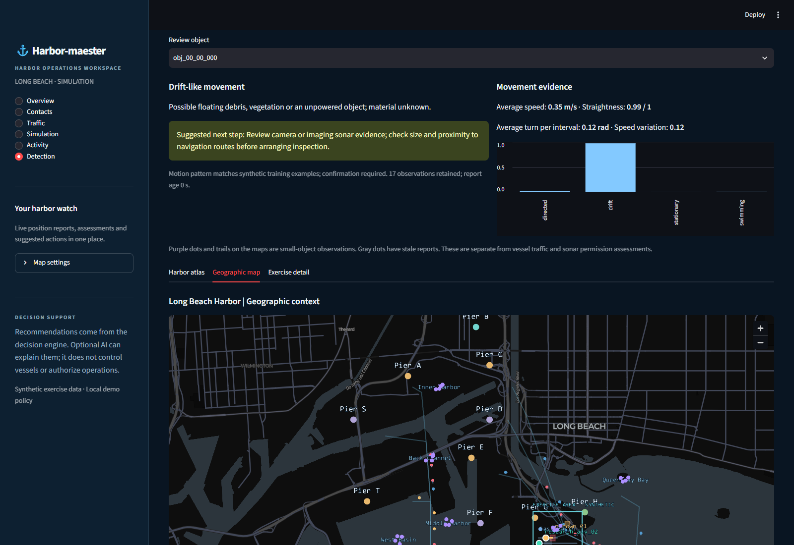

What is changing?
Estimate contact state and data quality from time-stamped positions. Track surface encounters, route deviation, berth delay and unusual small-object motion without assuming that every unknown is hostile.
Harbor-maester studies how a harbor watch can turn uncertain positions, moving traffic and incomplete identity into a timely, explainable recommendation for a human operator.
CPU-first prototype · Synthetic Long Beach exercises · Advisory only
Abstract
A harbor threat rarely arrives as a complete story. Positions are noisy, identifiers may be unconfirmed, vessel schedules compete for space, and sensor reports can stop. Harbor-maester investigates a bounded decision loop that turns those partial observations into auditable recommendations.
Our prototype combines a four-state Kalman tracker, uncertainty-aware zone forecasts, geometric route and encounter checks, exact mission permissions, and a separate local classifier for small-object motion. The primary action is chosen by explicit policy. A human operator receives the evidence, data-quality state and next step; optional language-model output may explain that decision but cannot change it.
In synthetic Long Beach exercises, a seeded approach case produced high concern 15 scenario seconds before estimated zone entry. A distinct synthetic motion dataset yielded 96.5% held-out behavior-class accuracy. These results establish repeatable software behavior, not field detection accuracy, responder speed, or lives saved.
02 / Problem formulation
We frame the operator’s job as three connected questions, each answer backed by an observation time, uncertainty and source.
Estimate contact state and data quality from time-stamped positions. Track surface encounters, route deviation, berth delay and unusual small-object motion without assuming that every unknown is hostile.
Project conditional zone entry and closest approach. Keep the forecast’s age, covariance and assumptions visible so a watch officer can distinguish a measured position from a model projection.
Rank a bounded set of actions: monitor, verify permission, request fresh observations, contact an operator or initiate human review. Acknowledgment is recorded; the system does not steer vessels.
Dual use by design. The same loop watches ordinary traffic and research missions, then remains useful when a disruption, sensor outage or port threat changes the operating picture. Wildfire and flood detection are future inputs, not current sensors.
03 / System architecture
The architecture separates simulation, numerical inference, policy and optional explanation. This makes the critical recommendation usable without a cloud model.
Invariant A One coordinator orders state changes, commits to SQLite and then publishes a snapshot.
Invariant B Missing or stale observations change capability and may suppress forecasts.
Invariant C The language model cannot set the primary action, identity, permission or risk band.
04 / Methods
Each method answers a narrower question than “what is the threat?” The combination creates an explanation an operator can inspect.
A constant-velocity state keeps position and velocity together. Measurement noise and a Mahalanobis innovation gate handle uncertain sonar positions; the Joseph update keeps covariance numerically sound.
Innovation gate: d² = ν⊤S−1ν. Rejected outliers remain visible as a data-quality conflict.
The engine propagates the state and covariance over a short horizon, checks where the mean path intersects configured polygons and samples 32 possible paths around the estimate.
The sampled zone-hit fraction is uncalibrated. It is a scenario indicator, not a validated collision or threat probability.
Every visible scheduled vessel receives a separate CPU assessment: relative-velocity closest point of approach, distance from its planned route and arrival delay. Stale reports suppress encounter predictions.
The current 120 m encounter, 140 m route and 30 s delay thresholds are illustrative demo assumptions.
A local 48-tree random forest uses speed, turn, straightness, acceleration and pauses from a 30–62 second position window. It can propose drift-like or swimming-like behavior and abstains when input is stale or ambiguous.
The scores are uncalibrated and trained on synthetic motion. A garbage bag, vegetation and an unpowered object may share a trajectory.
Freshness, mission binding, zone permissions, route-deviation hysteresis and evidence rules turn these estimates into one of five next actions. A contact with unconfirmed identity is not automatically labeled high risk.
05 / Synthetic cases
Choose a recorded test case below. The timeline is an illustration of verified scenario outputs, not a live feed from the decision engine.
FORECAST / ZONE POLICY
High concern appeared at scenario second 36. The estimated mean path reached the demo zone at second 51; the operator was shown a human-review recommendation before that modeled entry.
Noisy range and bearing reports establish a moving track.
A fresh forecast intersects a restricted polygon.
Request a human review and verify operating permission.
Source: repeatable in-process synthetic evaluation. These seconds are scenario time, not measured responder time.
06 / Human interface
The dashboard turns assessment records into an overview, contact review, surface traffic watch, simulation control, audit trail and small-object detection view.

A priority contact or traffic advisory is promoted with the evidence quality and review state alongside it.
Track age, forecast, reason codes, mission status and incident history remain inspectable.
The system suggests a bounded next step. The operator acknowledges a human handoff; the software does not dispatch or navigate.
A second, separate inference stream
Thirty-two synthetic object tracks can be observed across eight mapped Long Beach areas. After enough motion history, the Detection page presents behavioral hypotheses, feature evidence and a verification suggestion. Material remains unknown until a suitable sensor confirms it.

07 / Evaluation
Our current evidence is reproducible software and synthetic-case behavior. Field performance and responder impact are research questions still to be answered.
High concern at t = 36 s; estimated zone entry at t = 51 s in one seeded harbor-approach scenario.
One synthetic case · conditional forecastAfter sonar stops at t = 10 s, the existing report becomes stale at 13 s and lost at 20 s.
Synthetic outage · last position at t = 9 sBehavior-class accuracy on 800 held-out synthetic trajectories; 97% of cases received a hypothesis under the abstention rule.
2,000 synthetic training trajectories · four classesEngine, simulator, API and dashboard checks passed; browser checks covered live maps, review and detection.
Automated test suite · local Edge verificationThe 96.5% figure is not real-world debris or fish identification accuracy. The training and test trajectories were generated by the same hand-designed motion simulator. In the held-out set, 24 of 200 directed trajectories were confused with drift. No claim about lives saved, reduction in response time, or operational readiness follows from these results.
08 / Discussion & next studies
The core research claim is that an operator can receive a timely, inspectable recommendation while the system degrades clearly when evidence weakens. The prototype demonstrates that behavior in a synthetic environment. Deployment requires a different standard of evidence.
Use licensed harbor feeds and time-stamped sonar or camera tracks with provenance, coverage gaps and measured error. Add current, size and imagery before pursuing material or species identification.
Evaluate forecast reliability, missed events and false alerts per watch-hour on held-out vessels, days and ports. Compare movement classifiers against a simple drift baseline and test ambiguous cases.
Run tabletop trials against the existing workflow. Measure detection-to-acknowledgment time, correct next-action selection and workload. Only then estimate safety impact.
Synthetic reports → numerical assessment → recommendation → durable human acknowledgment; CPU fallback and local motion classification.
Real sensor integration, threshold calibration, image recognition, field validation, responder workflow and deployment hardening.
09 / References & reproducibility
This site is a static research narrative. The interactive case above reproduces recorded values; it does not call the engine. The local demo, evaluation scripts and model artifact live in the repository.
Explore the repository